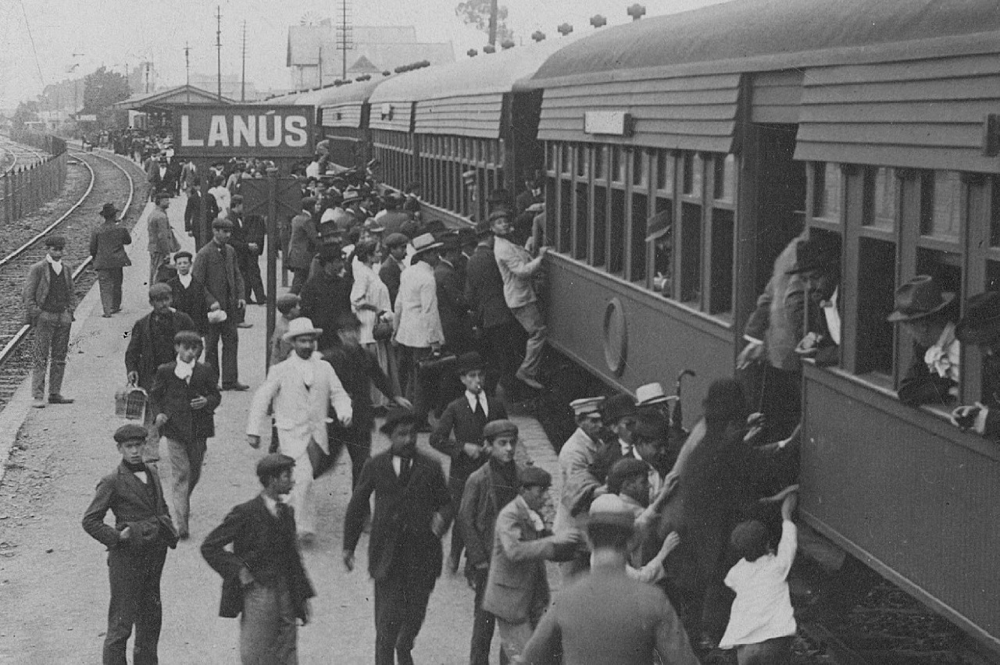
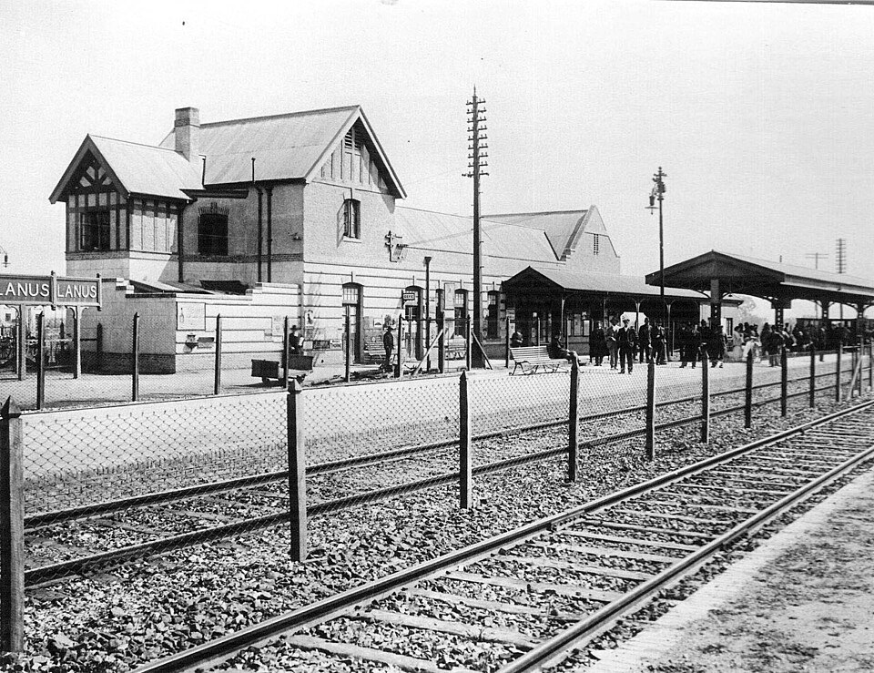

De "4 de Julio" a la Autonomía
Época Prehispánica y Colonial
Antes de la llegada de los españoles, el territorio estaba habitado por tribus nómadas de pampas y guaraníes, dedicados a la caza y recolección. Tras la segunda fundación de Buenos Aires en 1580, las tierras se organizaron en "pagos" (territorios delimitados por ríos). El actual Lanús quedó dividido entre los pagos de la Magdalena, la Matanza y el Riachuelo.

Las Invasiones Inglesas y el Siglo XIX
Paso de Tropas:
Durante las invasiones inglesas, las tropas británicas marcharon por estas tierras tras su desembarco en Quilmes rumbo a Buenos Aires.Partidos Madre:
En 1795, la zona integraba el partido de Quilmes. En 1852, debido a su gran extensión, se segregaron tierras para fundar el Partido de Barracas al Sur, que incluía a los actuales Avellaneda, Lanús, Lomas de Zamora y partes de Almirante Brown.
El legado de Anacarsis Lanús
La ciudad debe su nombre al terrateniente Anacarsis Lanús (1820-1888), quien adquirió tierras con la visión de fundar un pueblo.
- Construyó su quinta sobre el antiguo Camino Real (hoy Av. Hipólito Yrigoyen), frente a lo que hoy es la estación de tren.
- Junto a su hermano Juan, impulsó la creación de las primeras instituciones vitales: la sociedad de bomberos, la primera sala de atención médica y sociedades de fomento.
La Fundación de Villa General Paz
Aunque el nombre del municipio es Lanús, el trazado del pueblo original se llamó Villa General Paz. Fue fundado el 20 de octubre de 1888 por Guillermo Gaebeler, apenas seis días después de la muerte de Anacarsis Lanús. Gaebeler diseñó las calles y plazas inspirándose en la vida del General Paz, por consejo de su amigo Bartolomé Mitre.

Autonomía y Crecimiento Moderno
Originalmente, Lanús no era un municipio independiente. Formó parte de Avellaneda hasta que logró su autonomía el 1 de enero de 1945, bajo el nombre de "4 de Julio". En 1955, el distrito adoptó formalmente el nombre de Lanús para todo el partido. Durante la década de 1960, vivió su mayor explosión demográfica, consolidándose como el polo industrial y comercial que es hoy.